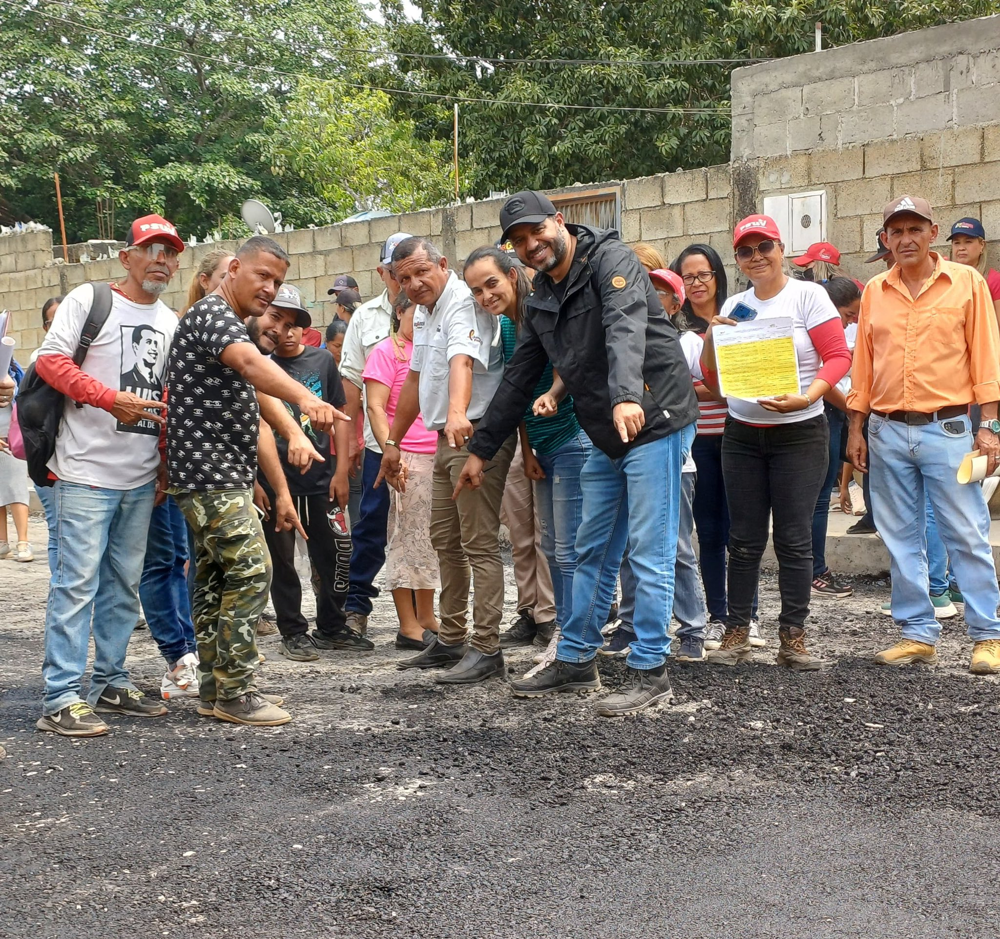

Área de Gestión Social
La Gestión Social del Instituto Municipal de la Vivienda es el puente que conecta a la institución con la comunidad. Nos dedicamos a diseñar y ejecutar programas y proyectos que promueven el acceso a una vivienda digna, el desarrollo de comunidades sostenibles y la mejora de la calidad de vida de todos los habitantes del municipio.
Nuestros servicios
En el área de Gestión Social, nuestro Instituto se enfoca en mejorar la calidad de vida de los habitantes a través de programas de vivienda, urbanismo y desarrollo comunitario. Ofrecemos asesoría, acompañamiento y oportunidades para que las familias puedan acceder a una vivienda propia y vivir en un entorno seguro y saludable.
Convierte tu hogar en realidad
Hacer realidad el sueño de la casa propia es más fácil de lo que crees. Con nuestro apoyo, podrás acceder a una amplia variedad de opciones de vivienda y simplificar todos los trámites.
Te acompañamos en cada paso del camino
Desde la búsqueda de la vivienda ideal hasta la firma de la escritura, contamos contigo en todo momento.
Un equipo de expertos dedicado a ayudarte
Nuestro equipo de expertos te brindará la asesoría que necesitas para tomar las mejores decisiones y hacer de este proceso una experiencia positiva.